Personagens
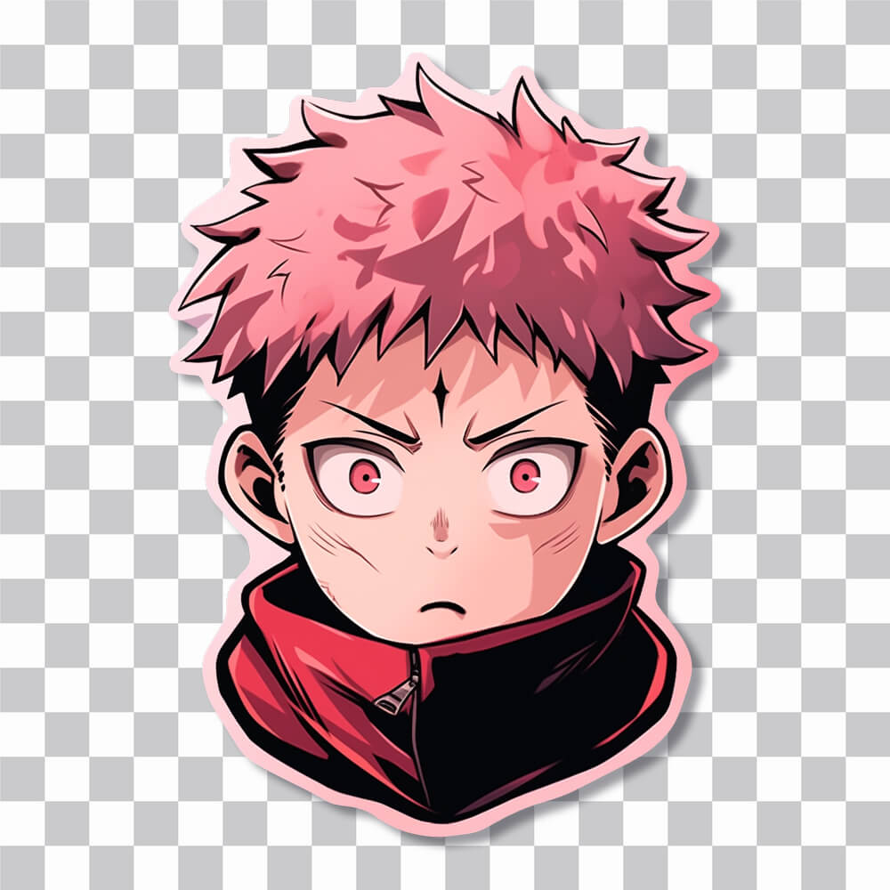
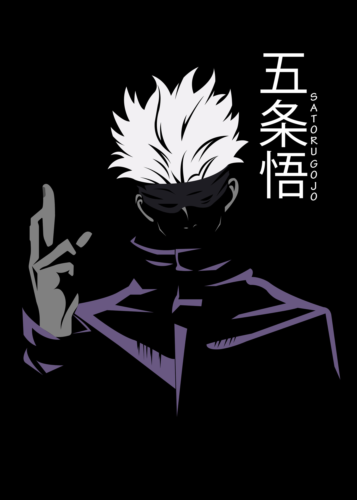
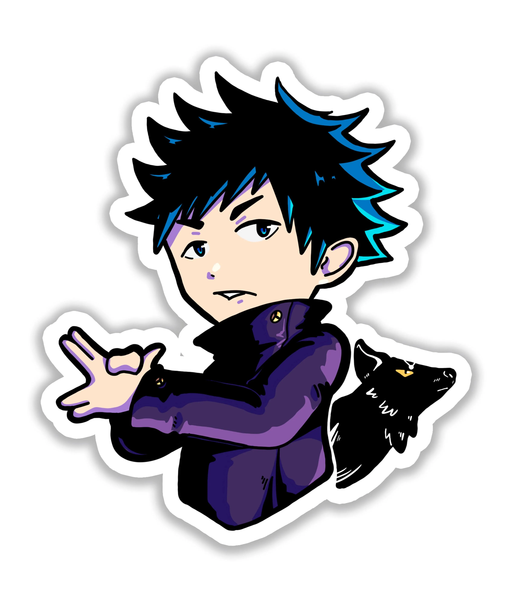
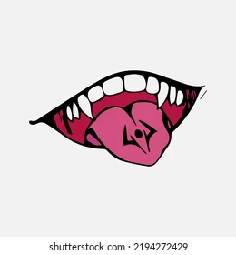
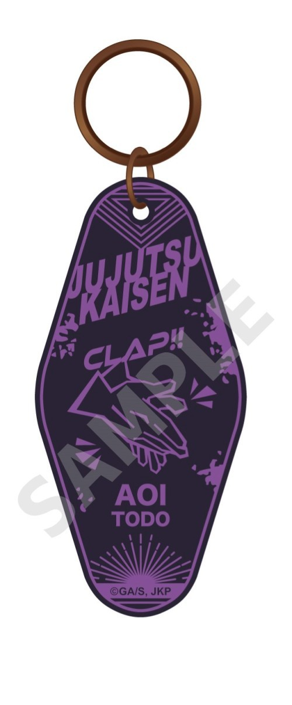
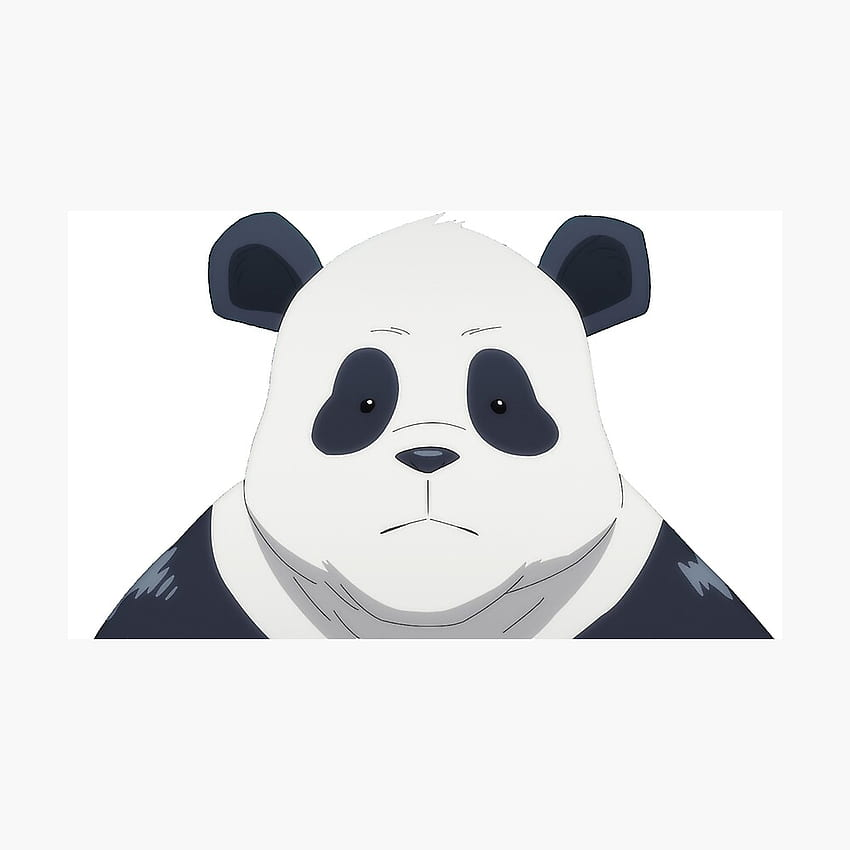
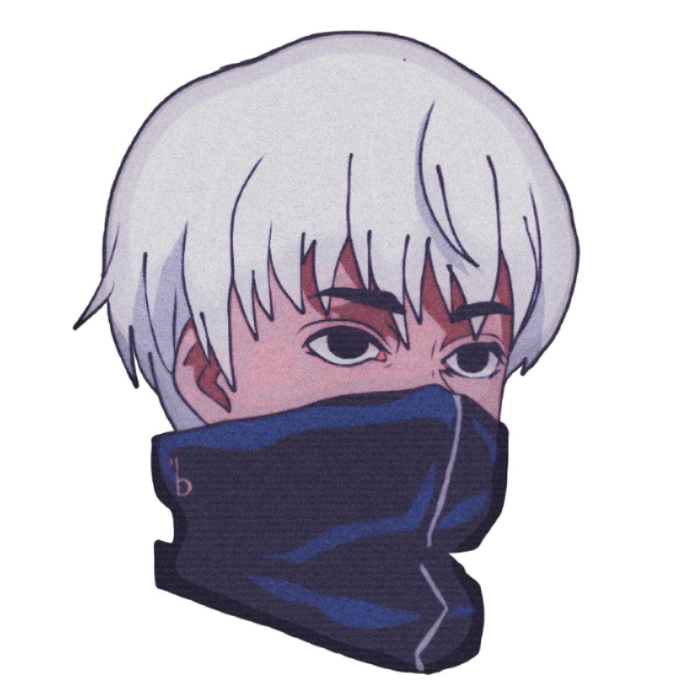
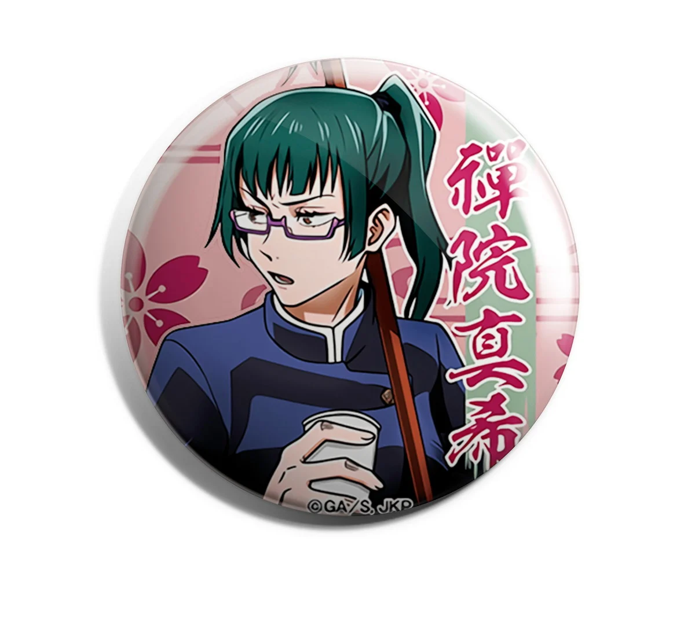
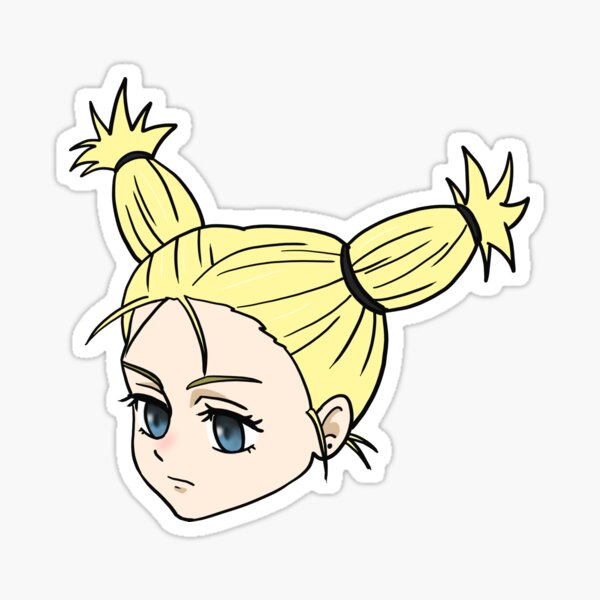
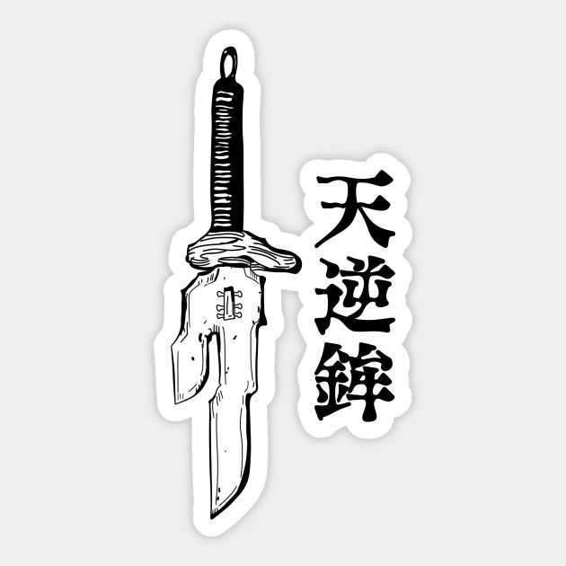
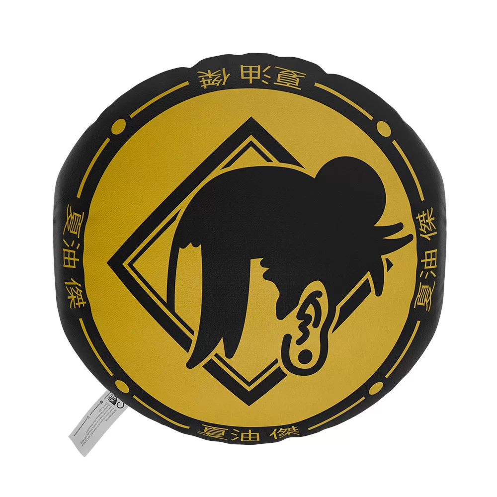
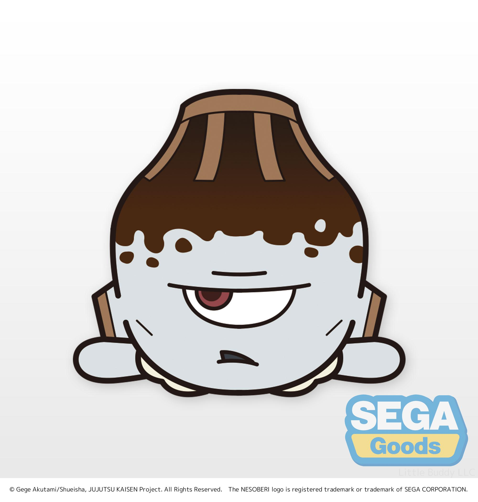

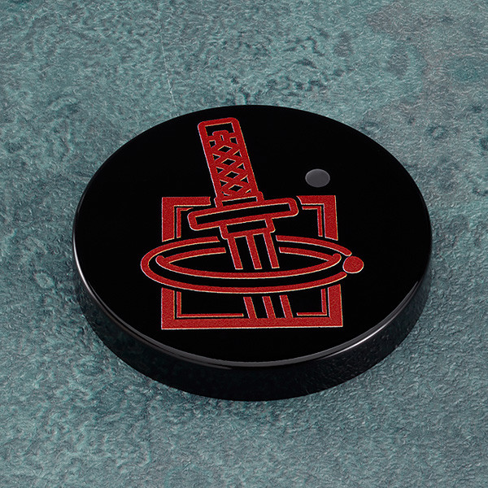
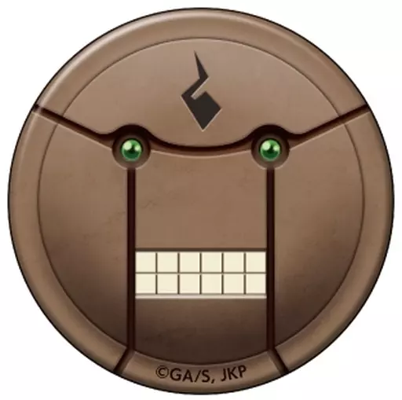
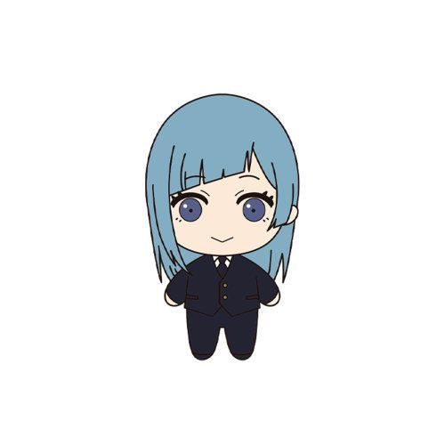
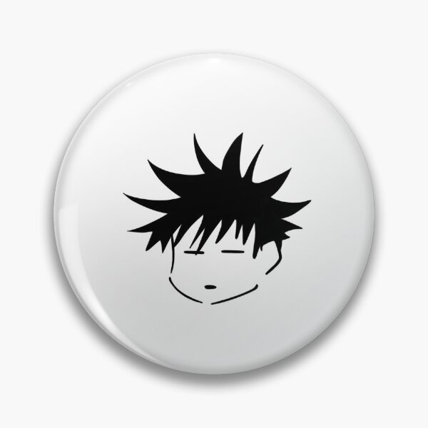
Aberturas
Veja todas as aberturas do anime
Abertura (1º Temporada) Kaikai Kitan by Eve
Abertura (2º Temporada) Vivid Vice
Abertura (3º Temporada) Ao No Sumika | Tatsuya Kitani
Abertura (4º Temporada) King Gnu「SPECIALZ」
Abertura (5º Temporada) King Gnu「AIZO」